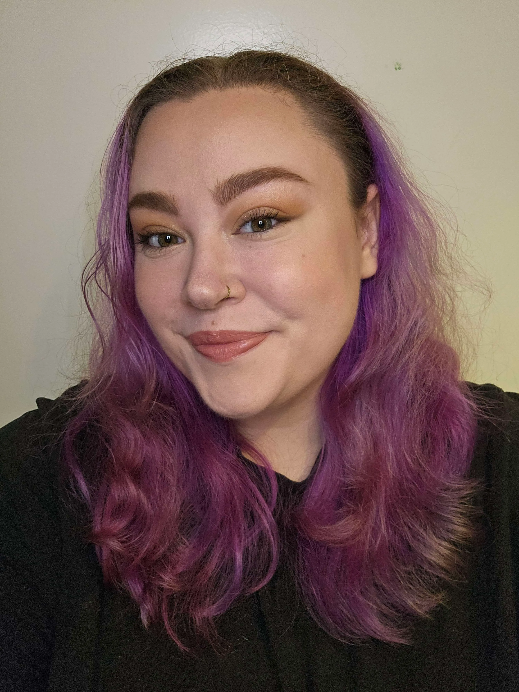
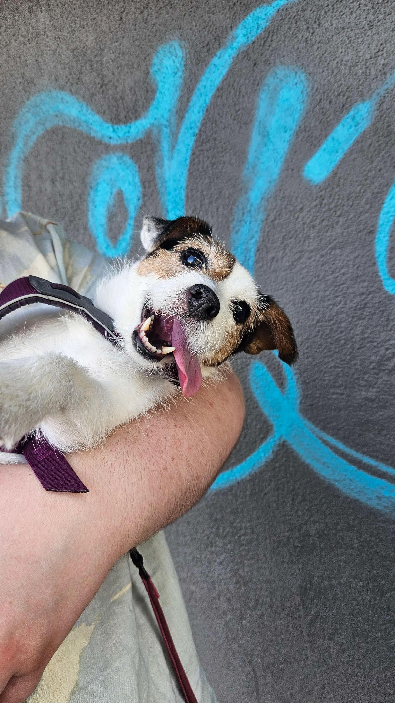

Game Design & Level Design Specialist

🗺️ Level & Game Designer · Oslo, Norway
I'm a passionate game developer specialising in level design and game design. I combine creative vision with technical expertise to craft worlds that feel alive — from intimate puzzle rooms to sprawling narrative landscapes. I believe great games come from truly understanding what makes players tick.

🐶 Jack Russell & Parson Terrier Mix · Chief Morale Officer
Tilly has been a key member of every project, specialising in moral support, mid-session zoomies, and knowing exactly when a snack break is needed. Her playtesting feedback consists mostly of head tilts, but they're always insightful.
When I'm not designing levels, you'll probably find me doing one of these ✨
Exploring game worlds is both my favourite hobby and my best research. Cozy games, narrative adventures, and anything with good level design have my heart.
From fantasy novels to design books, reading feeds my storytelling instincts and helps me bring richer worlds to the games I work on.
Whether it's drawing, crafting, building something, or just making a nice thing — I'm happiest when my hands are busy making something new.
My fiancé is my biggest supporter and adventure partner. We love exploring new places, trying new food, and spending cozy evenings in together.
From intimate spaces to sprawling open worlds, crafting engaging play areas
Designing mechanics, systems, and player feedback loops
Testing, iterating, and balancing for optimal player experience
Clear design documents, level briefs, and technical specifications
Working effectively with artists, programmers, and other designers
Proficient in major game engines and level design tools
Designed and implemented levels for multiple projects, focusing on player engagement and game balance. Participated in game jams and collaborative development projects.
Designed game mechanics, systems, and player progression for multiple projects, some developed in collaboration with other designers and developers.
Helped start and manage a student association focused on game development. Organised events, meetups, and projects for students interested in game making.
Studying game development and design principles, with a focus on level design and player experience. Worked on several group projects and collaborated with other students.
Learned fundamental programming and computer science concepts, including data structures, algorithms, and software development. Also studied design and accessibility principles.
Studied media and communication principles, including visual design, storytelling, and digital media production. Started a business as CEO in media production with 17 employees.
I'm always interested in discussing new projects and opportunities!
💌 Get in Touch